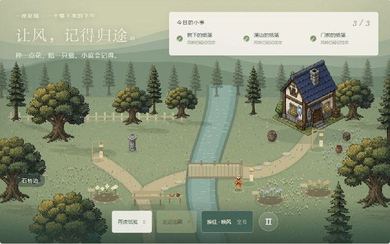

素材生产
SpriteCook 提供 AI 辅助像素素材制作，官方列出角色、道具、动画、图块与 UI 等用途。
- 它提供什么
- 供游戏或动画使用的图像与素材文件。
- 本轮的状态
- 已实际下载并接入免费角色、住宅和 6 类生活道具；树图来自文章。未连接账号、MCP 或 API，也未验证在线生成质量。
从一张树图，到会回应人的庭院。我们把素材、运动、行动与情绪连在一起，整理它能为我们的创作带来什么。
2026.11.16：新增 2 个角色、1 座小屋、6 类日常道具，已进入真实游戏。查看每项免费素材的预览、用途、情绪取舍与许可 →
庭院生活更新：三块花圃、三种花、小猫自主日常与完整本地存档已接入。查看玩法、独立试种、设计意图与保存范围 →
小屋与晴雨更新：室内行走、真实窗景、灯光、昼夜天气与植物、小猫反应已接入，并保存选择。实际玩法、独立预览与创作意义 →
这一方向属于游戏美术与视觉表现。产品、技术文章和我们做出的小游戏，分别承担不同环节。看懂这三层，才能准确判断它在现有工作流中的位置。
SpriteCook 提供 AI 辅助像素素材制作，官方列出角色、道具、动画、图块与 UI 等用途。
把静态树图拆成树干、内层与叶团，用行波、阵风和回弹让它获得可控制的动态。
让玩家走近、阅读、送风、得到回应，再拥有一处可停留的地方。
对我们最直接的帮助，是将现有静态素材组织成可控制、可修改、可反复使用的动态场景，并让画面变化与人的行动发生关系。
先在实景里点读六个主要元素，再按“主体、自然、空间、叙事与视听”查看完整图鉴。每项都说明它是什么、创造什么价值，以及对我们意味着什么。

运动的可信感来自部件关系、先后顺序与动静节奏。原文提供了可操作的分层思路，我们把它独立实现为网页模块。
橡树保留固定树干，分出叶团；较暗的内层填补叶团分开时露出的缝隙。分层是一种结构表达，也增加了素材处理工作。
叶团按整像素偏移，姿态每秒更新 10 次。外缘比中心更灵活，以保留像素画的明确边缘和手绘节奏。
风先到一侧，另一侧随后响应；同一个相位规则延伸到相邻树木，形成经过场景的行波。独立随机相位可在实验页作为对照。
局部风包在空间里移动，影响范围、强度和方向可计算；植物受到推动后通过弹簧回落。静风时运动收敛，下一阵风才清楚。
树冠、落叶、草地亮斑使用同一个风场。游戏另以靠近、阅读与送风力度判定风铃完成状态；风铃不是通用物理声学模拟。
从原文示意图恢复原生像素网格，再移除示意背景、生成透明图层。静止时，固定树干与叶团能逐像素重组成提取后的树图。这不代表取得了作者未发布的原始工作文件。
展开叶团，亲手检查 →


| 参数或规则 | 本地采用 | 为什么这样设置 |
|---|---|---|
| 姿态更新 | 10 Hz；位移取整 | 保留像素风姿态节奏；这不等于整个游戏只渲染 10 帧/秒。 |
| 行波 | 周期 1.54 秒，世界像素波长 138 | 控制叶团先后，数值随素材与场景尺度调整。原文的 69 px 不直接当成本地世界值。 |
| 风包 | 玩家风包速度 110 世界像素/秒，8 秒后移除 | 局部经过场景；不需要每片叶子独立维护天气逻辑。 |
| 弹簧 | 橡树周期约 2.2 秒，松树约 2.8 秒 | 不同植被具有不同响应速度；并非树木生物力学模型。 |
| 松树处理 | 8 层枝叶位移，主干固定 | 本轮未实现原文松树主干的逐行弯曲着色器。 |
| 阴影 | 整树投影近似 | 尚未实现逐叶团精确动态阴影。 |
创作意图是归来、被接纳与安静的陪伴。我们用具体行动与环境回应承载它；配色、粒子和文案共同服务这条关系。以下是设计解释，尚未通过用户研究证明稳定的情绪效果。
离开很久后回来。纸笺给地点以关系，人物给观看以入口。
走近、阅读、调整送风力度；风铃与树叶接住这一动作。
进度累积、猫跟来、窗灯亮起。反馈让行动的意义可见。
长椅与继续漫游为结束留出余味，让目标完成后仍有空间。
| 机制 | 玩家需要做的事 | 希望产生的体验 | 目前的尺度 |
|---|---|---|---|
| 空间探索 | 沿小径前往三处地点；过溪需要走桥。 | 以自己的脚步熟悉庭院，建立地点记忆。 | 单个小庭院，尚无复杂地图、关卡或任务分支。 |
| 纸笺阅读 | 靠近并主动读一读。 | 把风景与“给谁留着”联系起来。 | 三段固定文字，非生成式对话。 |
| 力度选择 | 蓄风 0.8–1.65 秒后松开为柔风；界面给出区间。 | 留意力度、轻柔照料，产生基本的操作掌控感。 | 太短或太强可以重试，不扣除已完成进度。 |
| 进展反馈 | 依次让三处风铃回应。 | 行动有结果，庭院与人的关系逐步建立。 | 第二处后猫出现，三处后窗灯亮起；没有复杂生态演化。 |
| 收束与余味 | 回长椅坐下，再决定是否继续。 | 允许停留，完成目标后仍保有自主节奏。 | 完整短流程原型，尚未证明长期游玩深度。 |
“留一条小径，给晚归的人。”
当前判断以我们已有的 AI 视频、动画工具与实时花园研究为背景。优先看它能补上哪一步、交付什么，以及还缺什么；不把潜在收益写成已测出的节省时间或商业成绩。
| 现有项目 | 已有关注点 | 这次能补充什么 | 接入状态 |
|---|---|---|---|
| 0001 · 动画制作 Skills 图谱 | 动画库、镜头与编排、素材接入和输出选型。 | 补一类可参数化的自然背景。先生成或渲染动态素材，再按选定的视频工具组织。 | 制作路径判断；尚未接入 Remotion 导出链。 |
| 0002 · 溪谷花园 / Three.js | 已有植被微风、实时空间、材质与光照。 | 比较阵风传播、静止间隔、不同植物回弹与空间一致性。 | 可迁移思路；未改动现有花园。3D 需重新实现权重和变形。 |
| 0003 · 真实场景 AI 重建 | 照片约束的空间、模型与可编辑资产；另有单图重建实验。 | 在有依据的空间基础上研究局部天气和环境动画，服务影片预演。 | 后续组合设想；须区分可编辑网格与照片外观表示，未完成集成。 |
| 0004 · Abyssal Garden | 密集植被、水下光色、GPU 渲染与性能管理。 | 共同研究环境运动的连贯性、空间范围和性能预算。 | 比较方法；Canvas 2D 图层不能作为 WebGPU 组件直接插入。 |
从“找到一个好效果”到“下次能稳定做出来”，需要保留结构、参数、素材来源与比较依据。
明确谁在感受风、为什么愿意停留，以及交付互动场景、循环素材还是视频镜头。本作采用归来的旅人和小庭回应。
统一视角、尺度、光向与像素网格，保留原件和来源。本次原文图为有出处的研究对照，不另授素材权利；制作自己的作品应准备有权使用的资产。
固定结构、可动部分、遮挡关系和补缝内层分别整理。素材提取脚本生成清单与哈希，静止重组先对齐。
控制风场位置、方向、强度、范围、相位、回弹与更新节奏。保持像素边缘的规则只用于相应画风。
让玩家或镜头的注意有落点。互动作品建立输入—变化—回应；视频作品按镜头组织变化过程与余味。
比较静态、普通摆动和分层行波，观察轮廓、缝隙、时序和静风回落；再检查完整游戏流程。
保存素材清单、运动模块、风格约束、参数、真实截图和验证限制。需要交付视频时，再接入实际帧渲染与编码流程。
“用有权使用的树木素材建立静止对照，拆出树干与叶团；实现能停止的局部阵风和位置相关行波。先验收轮廓、补缝与回落，再把动作接到一项有意义的互动，并记录实际验证结果。”
“无需额外动画帧”指这套环境运动可由静态图层驱动；分层准备、渲染和完整作品制作仍然存在。生成素材、动画实现与作品质量，需要分别评价。
官方文章或产品说明中提出的能力。
我们的判断结合当前目标给出的创作解释、价值分析与设想。
实际验证本机运行、操作、素材校验或检查能够支持的结论。
2026-11-16 下载并核对 ZIP 内通知；建筑和道具为 CC0，角色存在内外通知差异，保守遵循 sample license。实际清单与用途 →
本次研究的发现入口，讨论像素树木的细节和游戏品质。
2026-11-10。树木素材、分层、行波、阵风与回弹的主要参考；网页版本为独立实现。
用于后续在线生成接入参考，本轮没有安装、连接或消费额度。
核对版本有效日期 2026-11-12。用户自行生成输出的使用权，不自动推及作者文章配图；本轮未确认文章配图的再分发授权。
本页依据我们的讨论、原文阅读、本地源码与验收记录整理。本次随研究档案公开的原图和派生对照保留来源，不标为本站原创或 CC0；使用边界见 第三方说明。所有情绪解释与迁移价值判断均保留验证边界。
庭院现在可以调整两只陶盆、长椅与茶桌，并选择三种小径走向、两种铺面。碰撞与寻路随布置更新，小猫也会去新的长椅旁歇脚。温暖来自可改变、可使用的空间，以及留下来的行动痕迹。
五封邻居来信把空间选择串成故事：先读、回一句话，再挪动、选路、坐下或看窗景。后续来信回应实际动作，没有期限；旧信可重读，已送达的信不因撤回布置而消失。这是本地预写故事，不是联网发信或 AI 角色聊天。
布局与故事共同进入第 4 版存档，保留花圃、小猫、小屋与晴雨。免费陶盆、点心和角色继续实际使用；信箱、长椅与小径为本站程序绘制。主庭院之外提供独立会话体验，不替玩家消耗自己的故事选择。
目标设计 v0.3 以 AI 驱动阿岚的观察、计划、行动与平等交流。角色有稳定特点、自主日常和自己的目标，依照共同的移动与互动规则参与庭院；实际发生的事情形成连续经历。
游戏有日常生活、事件短篇、庭院创作三种目标模式。引擎维护世界事实、条件与存档，AI 居民参与行动，事件组织提供可玩的目标与结果。当前仍是规则驱动的猫、预写来信和生活原型，AI 与完整模式尚待接入。